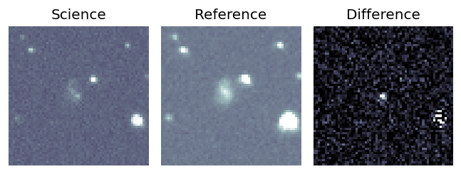
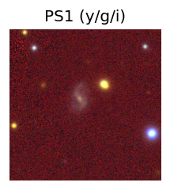
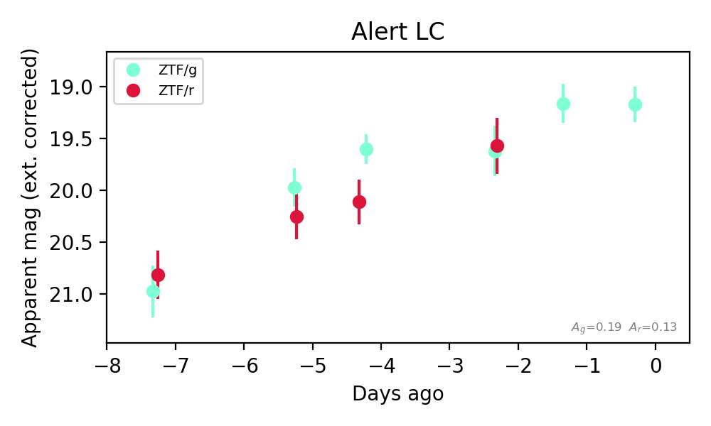
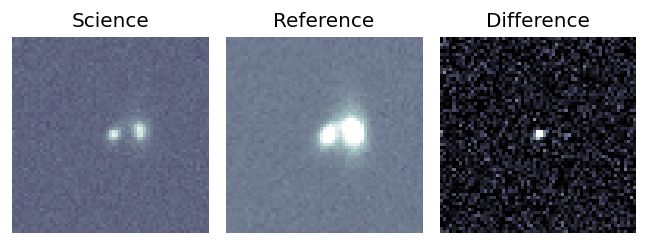
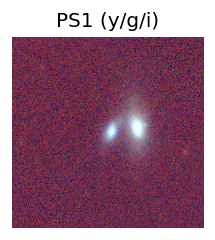
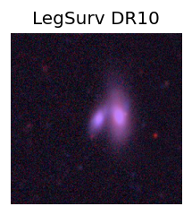
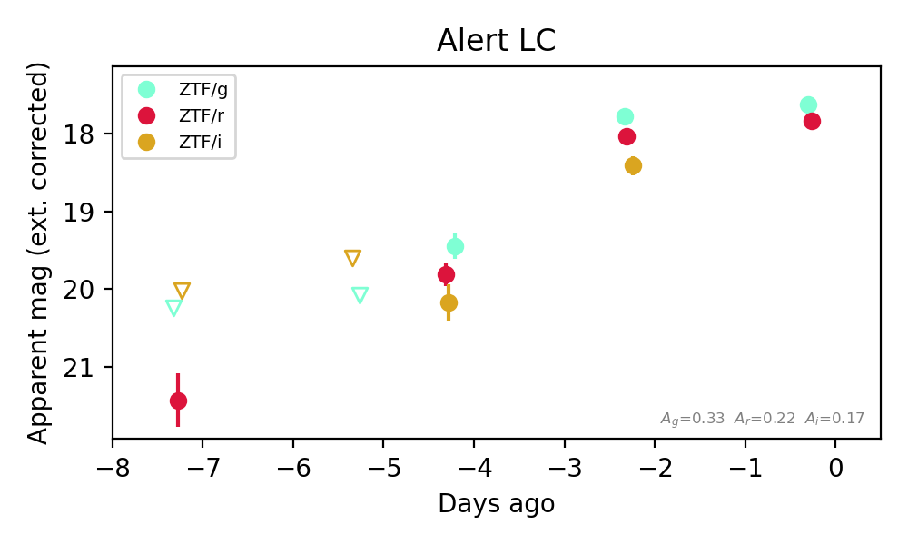
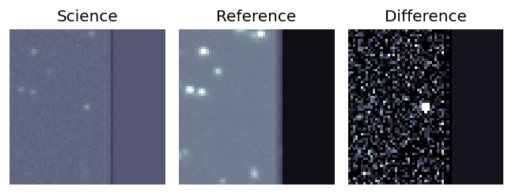
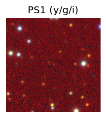
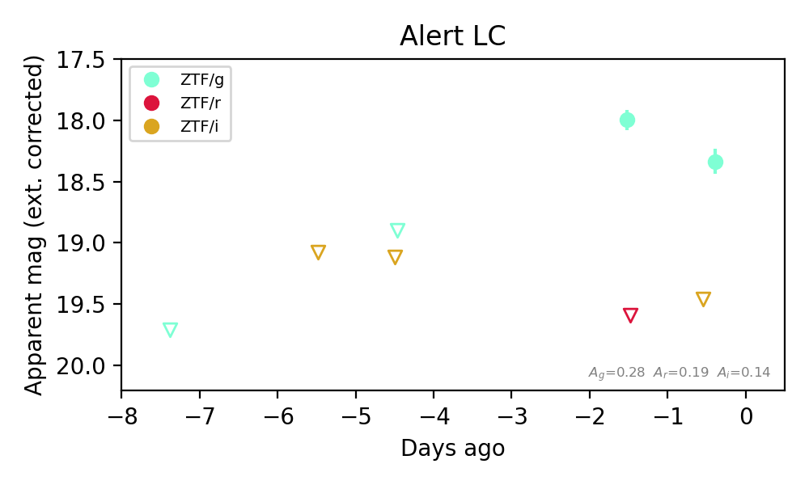

Candidate List 20260830Last night — ZTF: 1,764 passed basic cuts (65 young) · LSST: 0 passed basic cuts (0 young)Previous Day Next Day
Section 1: New Sources (age<1d) Section 2: Old (1-5d) sources observed last nightplaceholder
Section 1: New Afterglow/FBOT Cands Last Night (0)
Section 2: Older Sources Observed Last Night (5)
0. [ZTF] ZTF26abqtrgn (FBOT?) [Back to Top] [Share] [Trigger Swift] [Fritz Alert] [Fritz Source] [Lasair]RA, Dec: 21.24794, 36.61024 1h24m59.51s, 36d36m36.88sGalactic (l, b): 130.40381, -25.77421 ext(g-r) = 0.06


TESS: Sectors [17 57 85]
SDSS (<15 kpc):Found SDSS phot-z: z=0.09; peak abs mag = -18.85
PS1: 1 source in 3 arcsec Closest: d = 3.29 arcsec photoz=0.11+/-0.02 peak abs mag = -19.53
LegacySurvey: 0 sources in 3 arcsec

Extinction-corrected gr color:
From alerts: 0.05 +/- 0.37 mag
Consistent with synchrotron, g-r>0!
Rise Rate:
g: 0.21 mag/day
r: 0.25 mag/day
Fade Rate:
1. [ZTF] ZTF26abqzkkl (FBOT?) [Back to Top] [Share] [Trigger Swift] [Fritz Alert] [Fritz Source] [Lasair]RA, Dec: 29.81119, 24.4879 1h59m14.69s, 24d29m16.45sGalactic (l, b): 142.04152, -35.85499 ext(g-r) = 0.105


TESS: Sectors [17 42 43 85]
SDSS (<15 kpc):Found SDSS phot-z: z=0.06; peak abs mag = -19.54
NED photo-z only: WISEA J015914.02+242917.5 (G, 9.0″) z=0.0706 [zflag PUN] — not used for peak abs mag
PS1: 0 sources in 3 arcsec
LegacySurvey: 1 sources in 3 arcsec Closest: d = 1.07 arcsec, 253.9 deg (east of north) photoz=0.05 (68% bounds 0.04, 0.06), type=SER peak abs mag (ext. corrected) = -19.15 (68% bounds -18.78, -19.57)

Extinction-corrected gr color:
From alerts: -0.2 +/- 0.09 mag
Extinction-corrected gi color:
From alerts: -0.64 +/- 0.15 mag
Extinction-corrected ri color:
From alerts: -0.38 +/- 0.15 mag
Rise Rate:
g: 0.79 mag/day
r: 0.42 mag/day
i: 0.87 mag/day
Fade Rate:
2. [ZTF] ZTF26abramlb (FBOT?) [NED transient: PSO J011.2292+41.5531 (V*, 8.5″) — reported, not trusted] [Back to Top] [Share] [Trigger Swift] [Fritz Alert] [Fritz Source] [Lasair]RA, Dec: 11.22607, 41.55293 0h44m54.26s, 41d33m10.53sGalactic (l, b): 121.62, -21.30218 ext(g-r) = 0.488


TESS: Sectors [17 57 84]
PS1: 1 source in 3 arcsec Closest: d = 1.09 arcsec photoz=0.16+/-0.03 peak abs mag = -22.85
LegacySurvey: 0 sources in 3 arcsec

Extinction-corrected gr color:
From alerts: -0.69 +/- 0.11 mag
Rise Rate:
g: 0.71 mag/day
r: 0.54 mag/day
Fade Rate:
3. [ZTF] ZTF26abrbsty (Afterglow?) (TNS: AT 2025omw) [Back to Top] [Share] [Trigger Swift] [Fritz Alert] [Fritz Source] [Lasair]RA, Dec: 302.21989, 2.95975 20h 8m52.77s, 2d57m35.11sGalactic (l, b): 44.73664, -15.72982 ext(g-r) = 0.089


TESS: Sectors [54 81]
PS1: 1 source in 3 arcsec Closest: d = 0.20 arcsec photoz=0.60+/-0.14 peak abs mag = -24.81
LegacySurvey: 0 sources in 3 arcsec

Extinction-corrected gr color:
From alerts: -1.59 +/- 99 mag
Extinction-corrected gi color:
From alerts: -1.13 +/- 99 mag
Rise Rate:
g: 0.31 mag/day
Fade Rate:
g: 0.3 mag/day
4. [ZTF] ZTF26abrfbix (Afterglow?) [Back to Top] [Share] [Trigger Swift] [Fritz Alert] [Fritz Source] [Lasair]RA, Dec: 7.05952, 30.80234 0h28m14.28s, 30d48m8.41sGalactic (l, b): 117.06968, -31.8052 ext(g-r) = 0.085


TESS: Sectors [17 57 84]
PS1: 0 sources in 3 arcsec
LegacySurvey: 1 sources in 3 arcsec Closest: d = 6.97 arcsec, 28.7 deg (east of north) photoz=0.09 (68% bounds 0.01, 0.12), type=SER peak abs mag (ext. corrected) = -19.4 (68% bounds -15.36, -20.06)

Extinction-corrected gr color:
From alerts: -0.08 +/- 0.17 mag
Consistent with synchrotron, g-r>0!
Rise Rate:
g: 0.32 mag/day
r: 0.92 mag/day
Fade Rate: